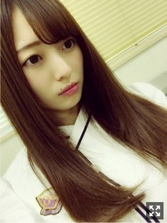
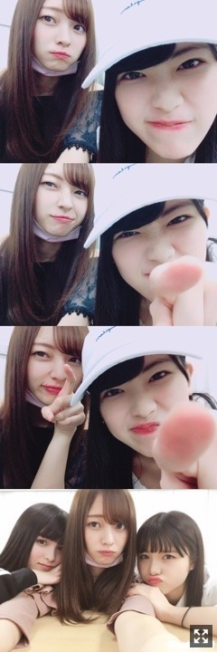
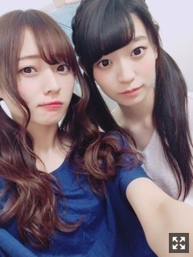
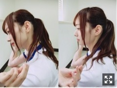
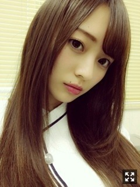

見てきたことが逆の立場に。梅澤美波
みなさまこんにちは！！
乃木坂46 ３期生の
梅澤美波です！！
(長いです、今日も

どこ見てんねん(つっこみ
すっごい寂しくてね
なんでか分からないけど本当に寂しい寂しいってずっとなってて
いつもなら一人の時間も必要って思う人なんだけど
今は一人の時間がいらないみたい☺︎
だれか〜お話しよ〜電話しよ( .. )（笑）
ももこがいっぱいいっぱいで
全てのことに否定的だったから
じゃあ今のももこにはなにも言わない！
って苦しかったけど突き放したりしてみたの。
ももこのピアノで歌えて本当によかった☺︎
あなたがいたから頑張れました
って本当に私のセリフ( .. )
一緒に頑張ってきて本当によかった☺︎
余韻がまだ残っております☺︎
そして！
急遽発表されたアルバムのイベント！！
24日から３日間、３期生は３人ずつ
各地方に飛んでゆきました〜( ¨̮ )
私は札幌、仙台、東京でした！
ももっぴ、れんかと！！
東京はももっぴ、りりたんと！
ももことれんかと一緒だと
めちゃくちゃ若返るね。（笑）
２人ともめちゃくちゃ騒いでて
楽屋で剣道ごっこしだすし、私まで巻き添え食らうし、移動中も終始爆笑してるし、
可愛くてしょうがないけど大変だったよ☺︎（笑）
れんかは寂しがってホテル泊まり来るし本当に妹みたい☺︎きゃわいい
初めての場所ばかりで楽しかったの☺︎
ご飯もたくさん食べて幸せだったよ〜
今日の東京での盛り上がりもすごくて
知ってる方もたくさんいて安心感がすごかったよ〜☺︎
りりあとももことみなみ、なかなかない３人
すごく楽しくて楽しくて仕方なかった◎

上３枚が昨日の札幌終わり直後のれんかとみなみ
最後が今日の終わり直後◎
来てくれた皆さま、平日にも関わらずたくさんありがとうございました（ ｉ _ ｉ ）
こうゆう機会ってなかなかないし、
あまり行けない地方に行けて本当に楽しかった、また行けるように頑張るので待っててね☺︎
学校、仕事早退してきたり
休んできてくださった方もありがとう( .. )
平日だし急だったから来れなかった方の方が多かったかと思うんだけど、
お仕事、学校お疲れ様( ¨̮ )
また待ってるね☺︎☺︎
アルバムたくさん聴いてね〜☺︎
そして！！
野外初めてだしめちゃくちゃワクワクしてる！！！
スタッフさんもアイアシアターの時と同様
変わらずのチームなので
安心して、楽しんでできる！！☺︎
サイリウムもうちわもボードも
全部見つけるから目離さんといてな〜（笑）
絶対ずっと見ててね！！
楽しみにしててね！！！
盛り上がっていこ〜！！！
そしてそして明後日の京都個握も宜しくね☺︎
遠征組の皆様は気をつけてきてね( ¨̮ )たのしみ
最近のこと☺︎
先日、舞台あさひなぐ観劇させて頂きました！！
先輩方の舞台を見るのは
ドラえもん、犬夜叉以来の３度目。
圧倒されます。
いつも見てる先輩方とは全然違うくて
そのキャラクターの人そのものになっていて
一言一言発する言葉にもすごく色んなものが詰まってるような感じがして。
内容もすごく面白くて
感動する場面もあって涙出ました。
きっと何かを頑張ってる方なら
すごく共感して伝わるはず！！
ぐさっと刺さる台詞もたくさんあって
すごく素敵な舞台でした。もう1回みたい！

だいすきなたまみ
ツインテール☺︎
たくさんコメントありがとう。
全部じっくり読ませていただいてるよ☺︎
幸せですね、こんなに言葉をくれるのって。( ¨̮ )
今日は質問返し久々にするよー！！
Q.好きなおにぎりの具は？
A.絶対めんたいこ！
A.コメントくださる方一人残らず全員覚えてるかって聞かれたら嘘になるけど、けど、毎回くれる方は、あ！前回もコメントくれた方だ☺︎って思うし、その方が握手会に来て下さると顔と名前が一致するってこともすごく良くあります( ¨̮ )逆に握手会に来てくれてる方がコメントくれると、今日こんなお話した方だ〜って思うよ( ¨̮ )
私、記憶力が結構あるみたい☺︎☺︎（笑）
Q.休日は外に出る？家にいる？
A.お洋服を求めに旅に出るときもあるし、１日家にいる時も全然あります☺︎家にいるときは貯まってる録画見たり永遠と音楽聴いて癒されたりしてることがほとんどかな〜。ぼーっとしてる時間がすき☺︎。
女の子✌︎
Q.スキンケア何使ってる？
A.アルビオンさんのものを使ってます！美白効果があるものをライン使いしてるよ☺︎ほんのりすごくいい香りがするのと、乳液先行ってとこがオススメ！！私には乳液先行型のものがあってるみたい☺︎みんなもぜひ( ¨̮ )
NOGIBINGOさん見ていただけましたか？？
先週のパーツ御三家決定戦では
美脚御三家に選んでいただきました( .. )
すごく嬉しかった！！
先生からはパーフェクトと、、
いや、ありがたいですね、本当に。
この脚をくれた両親に感謝です☺︎（笑）
もうちょっと自信もてるようにがんばる( ¨̮ )
そして、この前のモデル決定戦！
残念ながら私は選ばれなかったけど
(私のファンの方は私の夢を応援してくれているから、期待に添えられなくてごめんね。)
今回はご縁がなかったけど、
私は全然諦めてないし
全然落ち込んでないし
むしろやる気に満ち溢れてるよ( ¨̮ )（笑）
そんなに簡単になれるものではないのだって分かってるし、
自分にまだまだ足りない部分だって沢山あるから、今はそれを磨いていきたい☺︎
だから応援してね☺︎
なによりあやとかえでの大好きな年上組が
選ばれたことが私は嬉しくてしょうがなかった！！
(年上って思ったことないけどね☺︎（笑）)
おめでとう！２人の見るの楽しみ☺︎♡
また来週も見てな〜
最近かえでとよく一緒にいるの☺︎
告知させて下さい！！
５／３０ 月刊エンタメさん
桜井さんと２人で対談させて頂きました！！
先輩との対談は若月さん以来の２回目。
やっぱり緊張しますが、得るものが沢山あります。
桜井さんは対談の時もずっと笑顔で優しくて
本当に素敵な方だなあと思いました( .. )
すごく楽しかった、
こんな機会を頂けて嬉しいです☺︎
皆様ぜひ！よろしくお願い致します！

ポニーテール〜
横から撮ってもらったの
あんまりしないからレアなんだけど
そして今日はかりんさんのお誕生日☺︎♡
かりんさんお誕生日おめでとうございます☺︎！！
顔合わせの時から声かけてくださって
３期生のことをいつも気にかけてくださって
いつも優しくしてくださって本当にありがとうございます( .. )
素敵な１年にしてください( ¨̮ )♡
夜景みにいきたい。
つれてって☺︎
おやすみ
ばいばい

じろっ。
伝えるのが下手くそだから
もっと言葉の引き出しが増やせるように
目の前のことにいっぱいいっぱいになってしまう子供だから
もっと大人になりたい、と思う夜
がんばろな〜みんな、いつもありがとう
Original：https://www.nogizaka46.com/s/n46/diary/detail/38821?ima=0527&cd=MEMBER